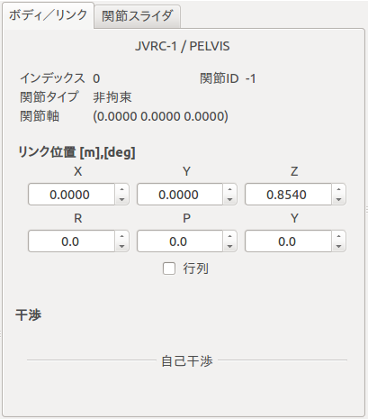
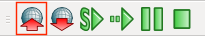
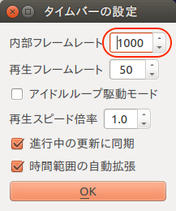
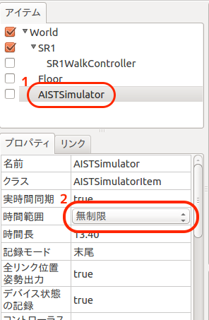
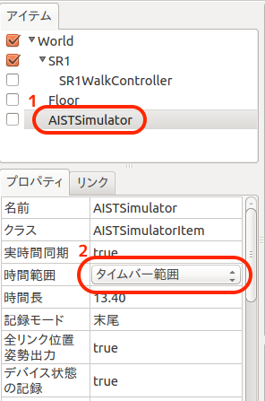

Creating a simulation project¶
This section explains how to create and run a simple simulation.
Launch Choreonoid¶
Let’s launch Choreonoid first. Type the following command in gnome-terminal.
$ choreonoid
You will see a window as follows.

Open a model file¶
Create a world item named “World” first by selecting “File”, “New...” and “World” menus.
Then load a model file of JVRC-1 by choosing “OpenHRP Model File” followed by “File”, “Open...” menus. The filename is samles/tutorials/JVRC-1/main.wrl.
Note
モデルファイルは “World” アイテム内(階層の下位)に読み込みます。 アイテムビュー内での階層関係・位置はシミュレーションの動作に影響するので注意してください。 位置が異なる場合は、アイテムビュー内のアイテムをドラッグして移動することが可能です。
When you check the checkbox named “JVRC”, JVRC-1 will be displayed in the scene view as follows.

Add a model of the floor¶
To prevent the robot from falling, let’s add a model of the ground.
The window of Choreonoid has a tab named “Items”. This tab is called “item view”. Select “World” item first in the item view. Then choose “OpenHRP Model File” following “File”,”Open...” menus and select the model file for the floor. Its filename is “/usr/share/choreonoid-1.5/model/misc/floor.wrl”.
Add a simulator item¶
Choose “World” item in the item view. Then create a “AISTSimulator” item by following “File”, “New...” menus.

シミュレーションの初期状態を設定する¶
ロボットの位置・姿勢の初期状態を設定してプロジェクトに保存しておくことで、Choreonoidを起動し直してプロジェクトを読み込んだ際に設定していた初期状態からシミュレーションを開始することが可能です。 初期状態の設定は以下の手順で行います。
ボディ／リンクビューでルートリンクの位置・姿勢を編集することができます。
関節スライダビューで関節の角度を編集することができます。

シーンビュー上でインタラクティブに編集、逆運動学を用いた編集も可能です。 インタラクティブ編集はシーンビューを編集モード(「閲覧モードと編集モード」参照)に切り替えて行います。
最後にシミュレーションバーの「現在の状態をワールド初期状態に設定」ボタンを押して初期状態を設定し、
ファイルバーの「プロジェクトを保存」するのを忘れないでください。

シミュレーションの基本設定（時間刻み、シミュレーション時間）¶
時間刻み¶
1[ms] を推奨します。時間刻みは計算速度とシミュレーション精度のトレードオフであり、コントローラの実行周期との兼ね合いも考慮して設定します。
タイムバーの設定ダイアログをボタンをクリックします。

タイムバーの設定で、内部フレームレートの値を「1000」(1ms)に設定します。

シミュレーション時間¶
無制限
アイテムビュー上で “AISTSimulator” アイテムを選択状態にします。
プロパティビューの時間範囲の値をダブルクリックして変更します。

タイムバー範囲
アイテムビュー上で “AISTSimulator” アイテムを選択状態にします。
プロパティビューの時間範囲の値をダブルクリックして変更します。
タイムバーの開始時間と終了時間を設定します。

Run simulation¶
Next press “Start simulation from the beginning” button in the simulation tool bar. Simulation will start.

Just after starting simulation, the robot falls down.

Because all joints are not controlled but free. We will control joints in the next section to keep the standing position.
Save a project¶
After running simulation, let’s save the project. Choose “Save Project As” menu in “File” menu and name the project file.
A sample project used in this tutorial¶
You can find a sample project file created by this tutorial in samples/tutorials/cnoid/sample1.cnoid.